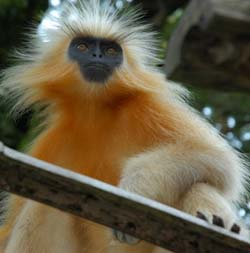
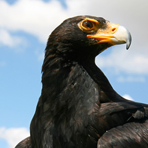
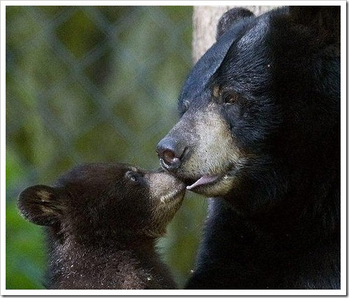

ЧТО ТАКОЕ МАМА?
МАМА ВИКИПЕДИЯ
по своей сути мама - это человек который:
1) растит вас
2)следит за вами
3)кормит и поит вас
4)помогает вам
5)волнуется за вас
простыми словами сурагатное материнство это когда какая-то мать вынашивает ребенка не для себя.
сурагатное материнство появилось в 1976 году в Соединенных Штатах Америки.
сурагатное материнство очень дорогое от 50 000 до 1000000.
приёмная мать это тот человек который берёт своего ребёнка из дет-дома и т. п. обычная мать отлечается от приемной тем что не являетя биологической матерью ребенка.
обычно приемной матерью стоновятся либо те кто не может иметь детей либо только один родитель.
дети могут попасть в дет-дом если их туда отдаст биологическая мать или если из семмьи его забрали органы опеки.
но бывает и такое что детей просто оставляют перед дет-домом и они остаются там.
биологическая мать являетя родной матерью ребёнка. У них с матерью и отцом одни гены. биологическая мать может отдать своего ребенка в дет-дом.
животные-матери
1. Лангур (тонкошерстная обезьяна)
Эти обезьяны отличаются, суровым нравом и расправляются с наиболее слабыми детенышами.

2.Африканская черная орлица
Африканская черная орлица высиживает два яйца, так сказать в целях борьбы за выживание, родившийся первым птенец уничтожает второго.

3.Черная медведица
Черная медведица, рождает от одного до трех детенышей, если детеныш один, мать бросает его в надежде на другой год станет более удачным.
